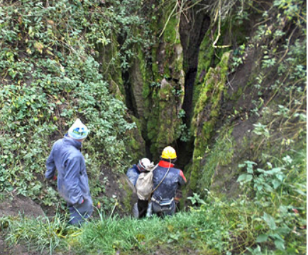
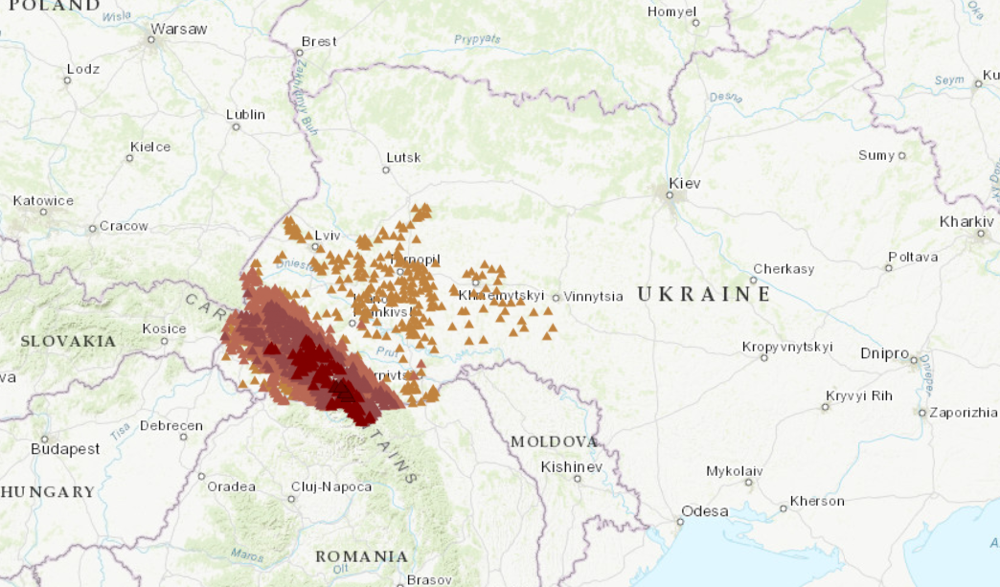

На території України протікає понад 63000 річок і струмків загальною довжиною більше ніж 200000. км. Більшість із них (біля 60000) це невеличкі річки довжина яких не перевищує 10 км. Річки довжиною завбільшки 10 км в Україні налічується понад 3000. До великих річок належать Дунай, Тиса, Дніпро, Прип’ять, Десна, Дністер, Сіверський Донець, Південний Буг, Західний Буг. Завдяки неоднаковими в різних частинах України кліматичними умовами, рельєфу, та іншими факторами густота річкової мережі дуже нерівномірна. Найгустіша мережа річок у Карпатах, відносно густа мережа у північній та центральній частині України. На півдні країни є райони, де річкова мережа надзвичайно рідка, а між пониззям Дніпра та озером Сиваш річок немає зовсім. Немає річок і на закарстованих яйлах Кримських гір. Переважна більшість річок України належить до басейнів Чорного та Азовського морів. Лише невелика кількість річок західної частини країни належить до басейну Балтійського моря (басейн р. Вісла). Річкова мережа України за основними водозборами розподіляється на дев'ять крупних басейнів. Це басейни річок Вісли, Дунаю, Дністра, Південного Бугу, Дніпра, Дону, а також басейни річок Приазов'я, Причорномор'я та Криму. На інтерактивних картах цого атласу показано більше ніж 7730 великих, середніх та малих річок, що протікають по території України і мають власну назву. У переліку дани назви річок та до якого басейну вони відносяться, а також їх довжина в межах України. Також дана карта басейнів річок, та деякі тематичні карти.

Печери України - це природні підземні порожнини, які утворилися внаслідок геологічних процесів, таких як розчинення вапняку, вулканічна діяльність або ерозія. Вони мають велике значення для науки, туризму та збереження природної спадщини.
Печери - це порожнини у верхній частині земної кори, сполучені з поверхнею одним або декількома вхідними отворами, що мають не освітлені сонячним світлом частини та доступні для проникнення людини. Печери за їх походженням розділяють на п'ять груп: тектонічні, ерозійні, льодові, вулканічні і найбільша група - карстові. Печери - це об'єкт досліджень спелеологів. Також печери становлять інтерес для фахівців різних галузей науки: геологів, гідрогеологів, біологів, археологів, істориків, палеонтологів та ін. Наразі в Україні відомо 2257 печер більшість з яких карстового походження, тобто ці печери виникли завдяки розчиненню чи вилуговуванню гірських порід поверхневими та/або підземними водами Приведено повний перелік цих печер, а їх місцезнаходження показано на супутникових картах. Також на супутникових картах показані контури деяких великих печер, дани їх описи і окремо топографічні плани. Також показана карта поширення порід в Україні, що карстуються, інтерактивна карта карстово-спелеологічним районуванням України, перелік та місцезнаходження найглибших і найдовших печер України і світу. Розділ "Література" містить статті про карст, дослідження печер та деякі методичні рекомендації спелеологам, а на сторінці "Корисні посилання" ви знайдете посилання на сайти деяких спелеологічних клубів України, спілок спелеологів та інші сайти спелеологічної тематики
Україна має кілька гірських систем, які розташовані в різних частинах країни. Найвідоміші з них - Карпати на заході та Кримські гори на півдні. Карпати є частиною великої гірської системи, що простягається через кілька країн Центральної та Східної Європи. Вони відомі своєю мальовничою природою, багатством флори і фауни, а також численними туристичними маршрутами. Найвища вершина Карпат - гора Говерла, яка має висоту 2061 метр над рівнем моря.
Фауна України є різноманітною і включає в себе багато видів тварин, птахів, риб та інших організмів. Україна має різні природні зони, такі як ліси, степи, гори та водні екосистеми, що сприяє багатству біорізноманіття. Серед тварин, які можна знайти в Україні, є вовки, лисиці, олені, кабани, зайці та багато інших. Птахи також є важливою частиною фауни України, зокрема орли, соколи, сови, журавлі та багато інших видів. Водні екосистеми України підтримують різноманітні види риб, амфібій та рептилій. Загалом, фауна України є важливою частиною природної спадщини країни і потребує охорони та збереження.

Україна має багату і різноманітну фауну, яка включає в себе багато видів тварин, птахів, риб та інших організмів. Завдяки різноманітним природним зонам, таким як ліси, степи, гори та водні екосистеми, Україна є домом для багатьох видів тварин. Серед ссавців, які можна знайти в Україні, є вовки, лисиці, олені, кабани, зайці та багато інших. Птахи також є важливою частиною фауни України, зокрема орли, соколи, сови, журавлі та багато інших видів. Водні екосистеми України підтримують різноманітні види риб, амфібій та рептилій. Загалом, фауна України є важливою частиною природної спадщини країни і потребує охорони та збереження.